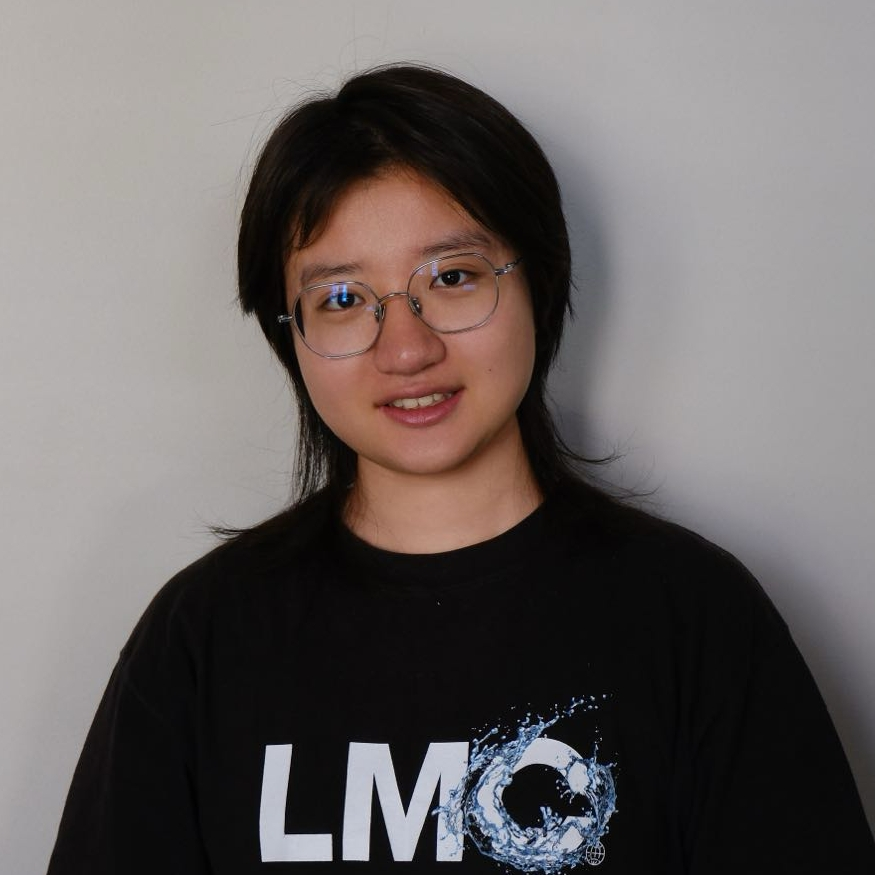

A Relative Error-Based Evaluation Framework of Heterogeneous Treatment Effect Estimators
International Conference on Learning Representations (ICLR), 2026

photo.jpgI am a first-year PhD student in the Department of Statistics at Columbia University. I am broadly interested in causal inference and its intersection with the social sciences, as well as statistical learning. Previously, I worked on evaluating heterogeneous treatment effect estimators.
Before Columbia, I studied statistics at the School of Mathematical Sciences, Peking University, with a double degree in sociology, where I was fortunate to work with Prof. Haoxuan Li, Prof. Peng Wu, and Prof. Zijun Gao.
A Relative Error-Based Evaluation Framework of Heterogeneous Treatment Effect Estimators
International Conference on Learning Representations (ICLR), 2026
Trustworthy Selection of Heterogeneous Treatment Effect Estimators
arXiv preprint arXiv:2511.18464, 2025